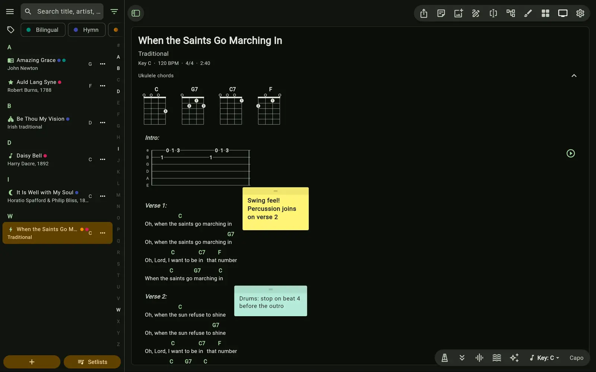
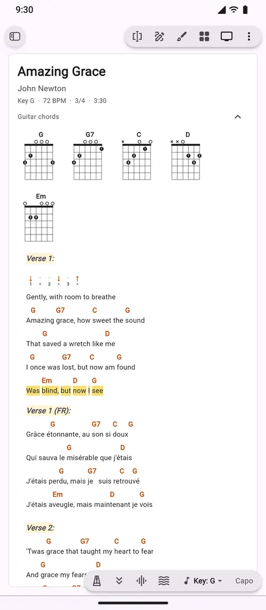
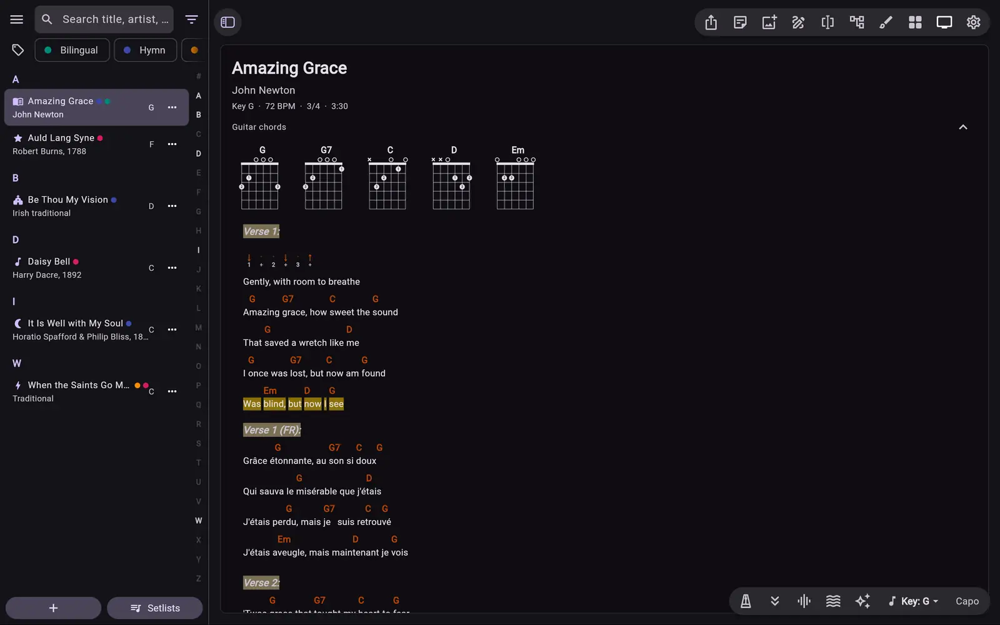
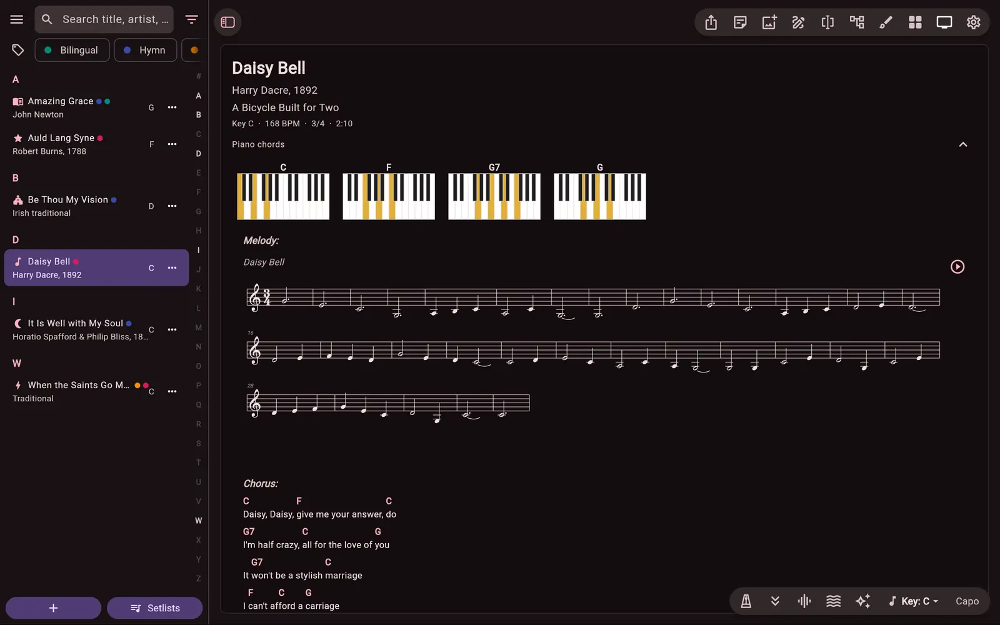
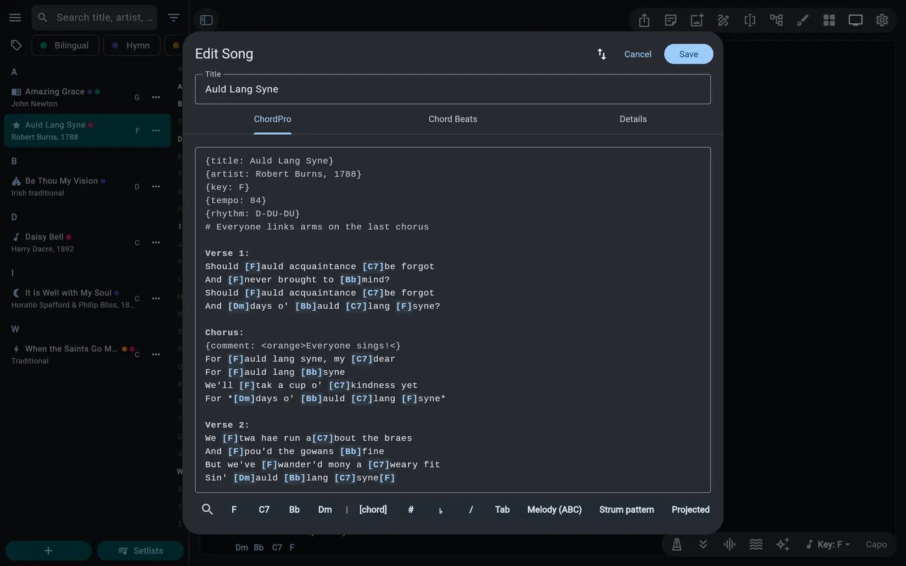
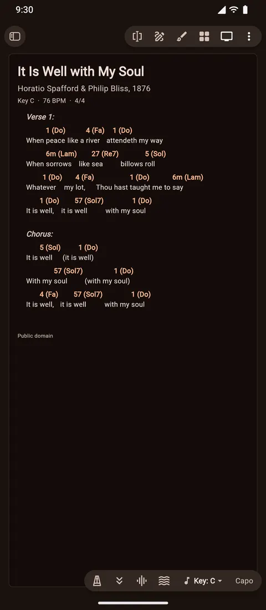
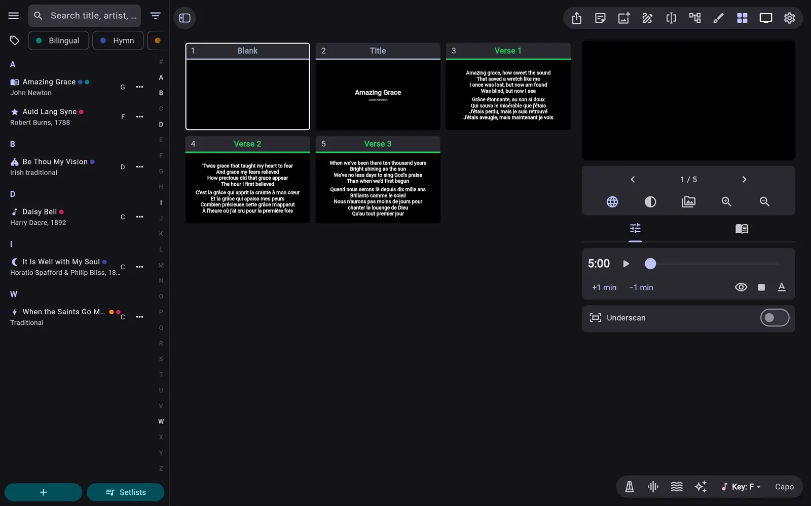
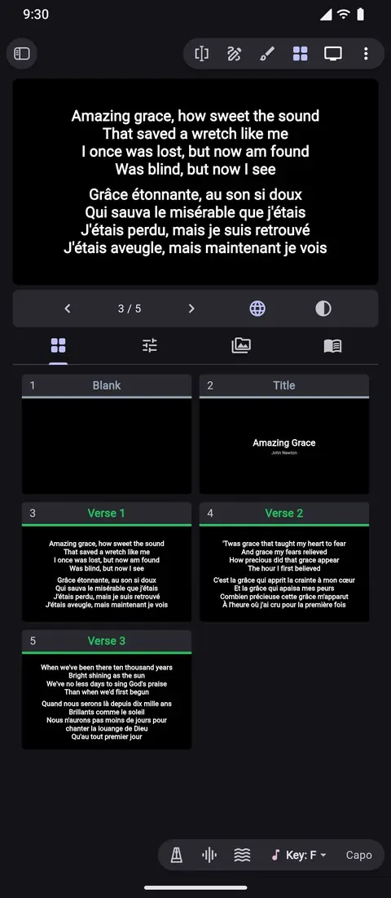

<title>ChordPro Presenter</title>
<meta name="claude:viewport-fit-sides" content="cover">
<meta name="description" content="ChordPro Presenter: chord sheets, setlists, bilingual projection and band tools in one app for rehearsal and the stage.">
<link rel="preconnect" href="https://fonts.googleapis.com">
<link rel="preconnect" href="https://fonts.gstatic.com" crossorigin>
<link rel="stylesheet" href="https://fonts.googleapis.com/css2?family=Geist:wght@400;500;600;700&family=Geist+Mono:wght@500;600&display=swap">
<style>
/* Layout: a dark studio stage. Full-bleed bands, each with a centred 1200px inner column; one bold
   colour (a blue-violet-amber stage-light glow) lights the hero and the projector, nothing else. */
:root {
  --bg: #08090b;          /* the room */
  --panel: #111318;       /* a desk surface */
  --panel-2: #181b21;
  --line: #262a32;
  --fg: #eceef1;
  --muted: #9aa0ac;
  --chord: #f4b860;       /* chord names, like the stage light on a music stand */
  --g1: #3d7bff; --g2: #8b5cff; --g3: #e14fd8; --g4: #ff4d5e; --g5: #ffa23a; /* the stage-light glow */
  --display: "Geist", "Helvetica Neue", "Segoe UI", system-ui, sans-serif;
  --body: "Geist", "Helvetica Neue", "Segoe UI", system-ui, sans-serif;
  --mono: "Geist Mono", ui-monospace, "SFMono-Regular", Menlo, monospace;
  --step-0: clamp(15px, 1.05vw + 10px, 17px);
  --step-1: clamp(18px, 1.2vw + 12px, 22px);
  --step-2: clamp(26px, 2.4vw + 14px, 40px);
  --step-3: clamp(36px, 5vw + 14px, 76px);
  --step-4: clamp(48px, 8.4vw + 12px, 132px);
  color-scheme: dark;
}
* { box-sizing: border-box; }
html { scroll-behavior: smooth; }
body { background: var(--bg); color: var(--fg); font: 400 var(--step-0)/1.6 var(--body); overflow-x: hidden; -webkit-font-smoothing: antialiased; }
body::before { content: ""; position: fixed; inset: 0 0 auto; height: env(safe-area-inset-top, 0px); z-index: 60; background: var(--bg); }
a { color: inherit; }
img { max-width: 100%; height: auto; display: block; }
h1, h2, h3 { font-family: var(--display); font-weight: 600; letter-spacing: -0.035em; text-wrap: balance; margin: 0; }
p { margin: 0; }
.wrap { max-width: 1200px; margin: 0 auto; padding-left: max(16px, env(safe-area-inset-left, 0px)); padding-right: max(16px, env(safe-area-inset-right, 0px)); }
.band { padding-block: clamp(80px, 12vw, 170px); position: relative; }
.eyebrow { font: 600 13px/1 var(--body); letter-spacing: .16em; text-transform: uppercase; color: var(--muted); }
.lede { font-size: var(--step-1); color: var(--muted); max-width: 40ch; line-height: 1.5; }
.lede b { color: var(--fg); font-weight: 600; }
.glowtext { background: linear-gradient(100deg, var(--g1), var(--g2) 30%, var(--g3) 55%, var(--g4) 75%, var(--g5)); -webkit-background-clip: text; background-clip: text; color: transparent; }
:focus-visible { outline: 2px solid var(--g2); outline-offset: 3px; border-radius: 6px; }

/* ---------- nav ---------- */
.nav { position: sticky; top: env(safe-area-inset-top, 0px); z-index: 50; backdrop-filter: saturate(160%) blur(18px); -webkit-backdrop-filter: saturate(160%) blur(18px); background: color-mix(in srgb, var(--bg) 72%, transparent); border-bottom: 1px solid color-mix(in srgb, var(--line) 70%, transparent); }
.nav .wrap { display: flex; align-items: center; gap: 24px; height: 56px; }
.brand { display: flex; align-items: center; gap: 10px; font: 700 17px var(--display); text-decoration: none; letter-spacing: -.01em; white-space: nowrap; }
.brand img { width: 26px; height: 26px; border-radius: 7px; }
.nav nav { display: flex; gap: 22px; margin-left: auto; font-size: 14px; color: var(--muted); }
.nav nav a { text-decoration: none; transition: color .2s; }
.nav nav a:hover { color: var(--fg); }
.btn { display: inline-flex; align-items: center; justify-content: center; gap: 8px; white-space: nowrap; border-radius: 999px; padding: 11px 22px; font: 600 15px var(--body); text-decoration: none; border: 1px solid var(--line); background: var(--panel); color: var(--fg); cursor: pointer; transition: transform .2s, background .2s; }
.btn:hover { transform: translateY(-1px); background: var(--panel-2); }
.btn.primary { background: var(--fg); color: var(--bg); border-color: var(--fg); }
.nav .btn { padding: 7px 16px; font-size: 14px; }
@media (max-width: 860px) { .nav nav { display: none; } .nav .btn { margin-left: auto; } }
@media (max-width: 420px) { .brand { font-size: 15px; } .nav .btn { padding: 6px 12px; font-size: 13px; } .nav .wrap { gap: 12px; } }

/* ---------- hero ---------- */
.hero { position: relative; padding-block: clamp(56px, 9vw, 120px) 40px; overflow: hidden; isolation: isolate; }
.aurora { position: absolute; inset: 0; z-index: -1; width: 100%; height: 100%; opacity: .9; }
.hero .wrap { text-align: center; display: grid; justify-items: center; gap: 22px; }
.hero h1 { font-size: var(--step-4); line-height: .95; letter-spacing: -0.055em; font-weight: 700; }
.hero h1 .br { color: var(--chord); font-family: var(--mono); font-weight: 500; letter-spacing: -.06em; font-size: .72em; vertical-align: .08em; }
.hero .lede { margin-inline: auto; text-align: center; max-width: 46ch; }
.ctas { display: flex; flex-wrap: wrap; gap: 12px; justify-content: center; }
.stage { position: relative; margin-top: clamp(30px, 6vw, 70px); width: 100%; max-width: 1100px; perspective: 1800px; }
.laptop { transform-origin: 50% 100%; }
.stage .laptop { animation: laptopIn 1.8s cubic-bezier(.16, 1, .3, 1) .1s both; }
@keyframes laptopIn { from { transform: perspective(2000px) rotateX(9deg) translateY(36px) scale(.965); opacity: .25; } to { transform: none; opacity: 1; } }
.lid { background: #050506; border: 1px solid #30333b; border-radius: 22px 22px 8px 8px; padding: 1.4% 1.4% 2.2%; box-shadow: 0 40px 120px -20px rgba(0,0,0,.8), 0 0 0 1px rgba(255,255,255,.03) inset; }
.lid .screen { border-radius: 8px; overflow: hidden; position: relative; aspect-ratio: 16 / 10; max-width: 100%; background: #0d0e11; }
.lid .screen img { width: 100%; height: 100%; object-fit: cover; }
.base { height: clamp(10px, 1.6vw, 20px); margin: 0 -6%; background: linear-gradient(#2a2d34, #15171b 60%, #0c0d10); border-radius: 0 0 26px 26px / 0 0 100% 100%; position: relative; }
.base::before { content: ""; position: absolute; left: 42%; right: 42%; top: 0; height: 40%; background: #0c0d10; border-radius: 0 0 12px 12px; }
.phone { position: relative; isolation: isolate; }
.phone::before { content: ""; position: absolute; inset: -1.25% -2.9%; border-radius: 14% / 6.2%; background: #050506; border: 1px solid #34373f; box-shadow: 0 30px 80px -10px rgba(0,0,0,.85), inset 0 0 0 1px rgba(255,255,255,.04); z-index: -1; }
.phone img { border-radius: 9.5% / 4.15%; width: 100%; aspect-ratio: 480 / 1100; max-width: 100%; }
.stage .phone { position: absolute; width: 21%; right: 1.5%; bottom: -4%; transform: rotate(4deg); animation: phoneIn 1.8s cubic-bezier(.16, 1, .3, 1) .45s both; }
@keyframes phoneIn { from { transform: translateY(56px) rotate(7deg); opacity: .25; } to { transform: rotate(4deg); opacity: 1; } }
@media (max-width: 700px) { .stage .phone { width: 30%; right: 1%; bottom: -6%; } }


/* ---------- section heads ---------- */
.head { display: grid; gap: 18px; max-width: 760px; margin-bottom: clamp(36px, 6vw, 70px); }
.head h2 { font-size: var(--step-3); line-height: 1; }
.head.center { margin-inline: auto; text-align: center; justify-items: center; }
.head.center .lede { margin-inline: auto; }

/* ---------- story (sticky screen) ---------- */
.story { display: grid; grid-template-columns: minmax(0, 5fr) minmax(0, 7fr); gap: clamp(30px, 5vw, 80px); align-items: start; }
.steps { display: grid; }
.step { min-height: 78vh; display: grid; align-content: center; gap: 14px; padding-block: 30px; opacity: .32; transition: opacity .5s; }
.step.on { opacity: 1; }
.step h3 { font-size: var(--step-2); line-height: 1.05; }
.step p { color: var(--muted); max-width: 42ch; }
.step .tag { font: 500 13px var(--mono); color: var(--chord); }
.step .mobile-shot { display: none; }
.sticky { position: sticky; top: calc(env(safe-area-inset-top, 0px) + 90px); }
.sticky .lid .screen img { position: absolute; inset: 0; opacity: 0; transition: opacity .7s ease, transform 1.2s ease; transform: scale(1.03); }
.sticky .lid .screen img.on { opacity: 1; transform: scale(1); }
@media (max-width: 900px) {
  .story { grid-template-columns: minmax(0, 1fr); }
  .sticky { display: none; }
  .step { min-height: 0; opacity: 1; padding-block: 0 46px; }
  .step .mobile-shot { display: block; border-radius: 14px; border: 1px solid var(--line); margin-top: 8px; }
}


/* ---------- bento (tools on stage) ---------- */
.bento { display: grid; grid-template-columns: repeat(6, minmax(0, 1fr)); gap: 14px; }
.tile { background: var(--panel); border: 1px solid var(--line); border-radius: 24px; padding: 26px; display: grid; gap: 10px; align-content: start; overflow: hidden; position: relative; min-width: 0; }
.tile h3 { font-size: var(--step-1); letter-spacing: -.015em; }
.tile p { color: var(--muted); font-size: 15px; }
.t2 { grid-column: span 2; } .t3 { grid-column: span 3; } .t4 { grid-column: span 4; }
@media (max-width: 900px) { .bento { grid-template-columns: repeat(2, minmax(0, 1fr)); } .t2, .t3, .t4 { grid-column: span 2; } }
.viz { height: 120px; display: grid; place-items: center; margin-bottom: 6px; }
.metro { display: flex; gap: 12px; }
.metro i { width: 18px; height: 18px; border-radius: 50%; background: #2b2e36; transition: background .08s, transform .08s, box-shadow .08s; }
.metro i.hit { background: var(--chord); transform: scale(1.35); box-shadow: 0 0 22px var(--chord); }
.metro i.hit.one { background: #fff; box-shadow: 0 0 26px #fff; }
.tuner { width: 220px; max-width: 100%; height: 110px; position: relative; }
.tuner .arc { position: absolute; inset: 0; border-radius: 220px 220px 0 0; border: 2px solid #2b2e36; border-bottom: 0; }
.tuner .tick { position: absolute; left: 50%; top: 4px; width: 2px; height: 16px; background: #4ade80; transform: translateX(-50%); }
.tuner .needle { position: absolute; left: calc(50% - 1px); bottom: 0; width: 2px; height: 96px; background: #fff; transform-origin: 50% 100%; animation: tune 4.2s ease-in-out infinite; border-radius: 2px; }
.tuner .note { position: absolute; left: 0; right: 0; bottom: -4px; text-align: center; font: 700 26px var(--display); }
@keyframes tune { 0% { transform: rotate(-38deg); } 30% { transform: rotate(14deg); } 55% { transform: rotate(-6deg); } 75%, 100% { transform: rotate(0deg); } }
.pads { width: 100%; height: 100px; }
.scroller { height: 110px; width: 100%; overflow: hidden; mask-image: linear-gradient(transparent, #000 25%, #000 75%, transparent); -webkit-mask-image: linear-gradient(transparent, #000 25%, #000 75%, transparent); }
.scroller div { animation: roll 14s linear infinite; font-size: 15px; line-height: 1.9; color: var(--muted); }
.scroller b { color: var(--chord); font: 700 13px var(--mono); margin-right: 6px; }
@keyframes roll { to { transform: translateY(-50%); } }
.beats { display: flex; gap: 22px; font: 700 18px var(--mono); color: var(--chord); align-items: baseline; }
.beats span small { color: #fff; letter-spacing: 2px; font-size: 14px; margin-left: 2px; }
.levels { display: flex; gap: 5px; align-items: flex-end; height: 90px; }
.levels i { width: 10px; border-radius: 3px; background: linear-gradient(#ff4d5e, #ffa23a 30%, #4ade80 60%); animation: lvl 1.1s ease-in-out infinite alternate; }
@keyframes lvl { from { height: 14%; } to { height: 96%; } }

/* ---------- notation switcher ---------- */
.split { display: grid; grid-template-columns: minmax(0, 1fr) minmax(0, 1fr); gap: clamp(30px, 6vw, 90px); align-items: center; }
@media (max-width: 900px) { .split { grid-template-columns: minmax(0, 1fr); } }
.seg { display: inline-grid; grid-auto-flow: column; grid-auto-columns: minmax(0, 1fr); gap: 4px; padding: 4px; border-radius: 999px; background: var(--panel); border: 1px solid var(--line); margin-top: 24px; max-width: 100%; }
@media (max-width: 520px) { .seg { display: grid; width: 100%; } .seg button { padding: 8px 4px; font-size: 13px; } }
.seg button { border: 0; background: none; color: var(--muted); padding: 8px 16px; border-radius: 999px; font: 600 14px var(--body); cursor: pointer; white-space: nowrap; }
.seg button[aria-pressed="true"] { background: var(--fg); color: var(--bg); }
.chordrow { display: flex; gap: clamp(14px, 3vw, 36px); flex-wrap: wrap; margin-top: 30px; }
.chordrow span { font: 700 clamp(28px, 4vw, 52px)/1 var(--mono); color: var(--chord); display: inline-block; transition: transform .35s, opacity .35s; }
.chordrow span.flip { transform: rotateX(90deg); opacity: 0; }

/* ---------- projection ---------- */
.proj { isolation: isolate; overflow: hidden; }
.tv { max-width: 980px; margin: 0 auto; }
.tv .panel { position: relative; aspect-ratio: 16 / 9; max-width: 100%; border-radius: 14px; overflow: hidden; border: 10px solid #050506; outline: 1px solid #30333b; box-shadow: 0 50px 140px -30px rgba(0,0,0,.9); background: #000; }
.tv canvas { position: absolute; inset: 0; width: 100%; height: 100%; }
.tv .lyrics { position: absolute; inset: 0; display: grid; place-content: center; text-align: center; padding: 6%; gap: 4%; font-family: var(--body); }
.tv .lyrics p { font-size: clamp(14px, 2.6vw, 32px); font-weight: 600; line-height: 1.3; text-shadow: 0 2px 18px rgba(0,0,0,.6); transition: opacity .8s, transform .8s; }
.tv .lyrics p.fr { font-style: italic; font-weight: 500; color: #e9e3ff; }
.tv .lyrics.fade p { opacity: 0; transform: translateY(8px); }
.tv .stand { width: 18%; height: 34px; margin: 0 auto; background: linear-gradient(#1c1e23, #0d0e11); clip-path: polygon(30% 0, 70% 0, 100% 100%, 0 100%); }
.chips { display: flex; flex-wrap: wrap; gap: 8px; justify-content: center; margin-top: 34px; }
.chip { border: 1px solid var(--line); background: var(--panel); border-radius: 999px; padding: 7px 14px; font-size: 14px; color: var(--muted); }

.trans { display: grid; grid-template-columns: minmax(0, 1fr) minmax(0, 1.4fr); gap: 20px 60px; align-items: start; max-width: 980px; margin: 60px auto 0; border-top: 1px solid var(--line); padding-top: 34px; }
.trans h3 { font-size: var(--step-2); margin-top: 10px; line-height: 1.1; }
.trans p { color: var(--muted); font-size: var(--step-1); line-height: 1.5; }
@media (max-width: 760px) { .trans { grid-template-columns: minmax(0, 1fr); } }

/* ---------- wide shot ---------- */
.wide .lid { max-width: 1100px; margin: 0 auto; }

/* ---------- remote ---------- */
.remote { display: grid; grid-template-columns: minmax(0, 300px) minmax(0, 1fr) minmax(0, 560px); align-items: center; gap: 0 18px; }
.rphone { container-type: inline-size; }
.rphone > * { position: absolute; }
.rphone img { position: static; }
.rp-prev { left: 3.33%; top: 8.82%; width: 93.33%; height: 22.8%; background: #000; display: grid; place-content: center; gap: 4cqw; text-align: center; border-radius: 3cqw; }
.rp-prev p { font: 600 4.2cqw/1.25 var(--body); color: #fff; margin: 0; transition: opacity .3s; }
.rp-prev p.fr { font-weight: 500; font-style: italic; color: #ddd; }
.rp-count { left: 26.5%; top: 32.6%; width: 14%; height: 3.6%; background: rgb(42, 41, 48); color: #fff; font: 500 4cqw var(--body); display: grid; place-items: center; font-variant-numeric: tabular-nums; }
.rp-sel { border: 2px solid #fff; border-radius: 1.6cqw; width: 43.1%; height: 13.1%; left: var(--sx, 8%); top: var(--sy, 57%); transition: left .45s cubic-bezier(.2, .8, .2, 1), top .45s cubic-bezier(.2, .8, .2, 1); }
.rp-tap { width: 13cqw; height: 13cqw; border-radius: 50%; background: rgba(255, 255, 255, .55); left: var(--tx, 30%); top: var(--ty, 62%); transform: translate(-50%, -50%) scale(0); opacity: 0; }
.rp-tap.go { animation: tap .7s ease-out; }
@keyframes tap { 0% { transform: translate(-50%, -50%) scale(.3); opacity: .9; } 100% { transform: translate(-50%, -50%) scale(1.3); opacity: 0; } }
.rwire { width: 100%; height: 40px; overflow: visible; }
.rwire .wire { stroke: #2b2e36; stroke-width: 2; fill: none; vector-effect: non-scaling-stroke; }
.rwire .pulse { stroke: url(#wireGlow); stroke-width: 3; fill: none; stroke-dasharray: 40 400; stroke-dashoffset: 440; vector-effect: non-scaling-stroke; }
.rwire .pulse.go { animation: flow .9s ease-in-out; }
.rtv { max-width: 100%; margin: 0; }
.rtv-bg { position: absolute; inset: 0; background: radial-gradient(120% 90% at 20% 10%, #3d2a8a, transparent 60%), radial-gradient(90% 80% at 85% 90%, #0f5a86, transparent 60%), #0b0620; }
.rtv .lyrics p { font-size: clamp(13px, 1.7vw, 24px); }
.rpoints { display: grid; grid-template-columns: repeat(4, minmax(0, 1fr)); gap: 18px; margin-top: 50px; }
.rpoints div { border-top: 1px solid var(--line); padding-top: 16px; min-width: 0; }
.rpoints b { display: block; font: 600 17px var(--display); margin-bottom: 4px; }
.rpoints span { color: var(--muted); font-size: 15px; }
.rpoints code { font: 500 13px var(--mono); color: var(--chord); overflow-wrap: anywhere; }
@media (max-width: 900px) {
  .remote { grid-template-columns: minmax(0, 1fr) minmax(0, 1.5fr); gap: 18px; }
  .rwire { display: none; }
  .rpoints { grid-template-columns: repeat(2, minmax(0, 1fr)); }
}
@media (max-width: 560px) { .rpoints { grid-template-columns: minmax(0, 1fr); } .rtv .lyrics p { font-size: 11px; } .rtv .lyrics p.fr { display: none; } }

/* ---------- band sync ---------- */
.net { position: relative; max-width: 760px; margin: 0 auto; aspect-ratio: 760 / 300; }
.net svg { width: 100%; height: 100%; overflow: visible; }
.net .wire { stroke: #2b2e36; stroke-width: 2; fill: none; }
.net .pulse { stroke: url(#wireGlow); stroke-width: 3; fill: none; stroke-dasharray: 40 400; animation: flow 2.6s linear infinite; }
.net .pulse.b { animation-delay: .9s; } .net .pulse.c { animation-delay: 1.7s; }
@keyframes flow { from { stroke-dashoffset: 440; } to { stroke-dashoffset: 0; } }
.net rect, .net .dev { fill: var(--panel); stroke: #3a3e47; stroke-width: 2; }
.net text { fill: var(--muted); font: 600 13px var(--body); }

/* ---------- gallery marquee ---------- */
.marquee { overflow: hidden; mask-image: linear-gradient(90deg, transparent, #000 8%, #000 92%, transparent); -webkit-mask-image: linear-gradient(90deg, transparent, #000 8%, #000 92%, transparent); }
.track { display: flex; gap: 26px; width: max-content; animation: slide 70s linear infinite; padding-block: 30px 50px; }
.marquee:hover .track { animation-play-state: paused; }
.track .phone { width: clamp(180px, 20vw, 250px); flex: none; }
.track figure { margin: 0; display: grid; gap: 14px; justify-items: center; }
.track figcaption { color: var(--muted); font-size: 14px; }
@keyframes slide { to { transform: translateX(-50%); } }
.formats .track { gap: 12px; animation-duration: 50s; padding-block: 8px; }
.formats .track.rev { animation-direction: reverse; animation-duration: 60s; }
.fmt { border: 1px solid var(--line); border-radius: 14px; padding: 14px 22px; font: 600 18px var(--display); white-space: nowrap; background: var(--panel); }
.fmt small { display: block; font: 500 12px var(--body); color: var(--muted); letter-spacing: .08em; text-transform: uppercase; }

/* ---------- privacy ---------- */
.trio { display: grid; grid-template-columns: repeat(3, minmax(0, 1fr)); gap: 14px; }
.trio div { border: 1px solid var(--line); border-radius: 22px; padding: 26px; background: var(--panel); min-width: 0; }
.trio b { font: 700 var(--step-2)/1 var(--display); display: block; margin-bottom: 10px; }
.trio span { color: var(--muted); }
@media (max-width: 760px) { .trio { grid-template-columns: minmax(0, 1fr); } }

/* ---------- all features ---------- */
.finder { display: flex; flex-wrap: wrap; gap: 12px; align-items: center; margin-bottom: 18px; }
.search { flex: 1 1 280px; display: flex; align-items: center; gap: 10px; border: 1px solid var(--line); background: var(--panel); border-radius: 14px; padding: 0 16px; min-width: 0; }
.search input { flex: 1; min-width: 0; background: none; border: 0; color: var(--fg); font: 500 16px var(--body); padding: 14px 0; outline: none; }
.search svg { flex: none; color: var(--muted); }
.count { color: var(--muted); font-size: 15px; font-variant-numeric: tabular-nums; }
.cats { display: flex; gap: 8px; overflow-x: auto; padding-bottom: 10px; scrollbar-width: thin; margin-bottom: 26px; }
.cats button { flex: none; border: 1px solid var(--line); background: var(--panel); color: var(--muted); border-radius: 999px; padding: 7px 14px; font: 600 13px var(--body); cursor: pointer; }
.cats button[aria-pressed="true"] { background: var(--fg); color: var(--bg); border-color: var(--fg); }
.cat { margin-bottom: 44px; }
.cat h3 { font-size: var(--step-2); display: flex; align-items: baseline; gap: 14px; flex-wrap: wrap; }
.cat h3 small { font: 500 15px var(--body); color: var(--muted); letter-spacing: 0; }
.cat > p { color: var(--muted); margin: 6px 0 18px; }
.flist { display: grid; grid-template-columns: repeat(3, minmax(0, 1fr)); border-top: 1px solid var(--line); border-left: 1px solid var(--line); border-radius: 18px; overflow: hidden; }
.flist div { padding: 18px 20px; min-width: 0; box-shadow: inset -1px -1px 0 var(--line); }
.flist b { display: block; font-weight: 600; margin-bottom: 2px; }
.flist span { color: var(--muted); font-size: 15px; line-height: 1.45; }
.flist mark { background: color-mix(in srgb, var(--g2) 45%, transparent); color: inherit; border-radius: 3px; }
@media (max-width: 960px) { .flist { grid-template-columns: repeat(2, minmax(0, 1fr)); } }
@media (max-width: 600px) { .flist { grid-template-columns: minmax(0, 1fr); } }
.empty { color: var(--muted); padding: 30px 0; }

/* ---------- get it ---------- */
.get { display: grid; grid-template-columns: repeat(2, minmax(0, 1fr)); gap: 14px; }
.get .dl { display: flex; flex-wrap: wrap; gap: 10px; align-items: center; margin-top: 6px; }
.get .obt img { height: 44px; width: auto; }
.tip { display: inline-block; vertical-align: .15em; margin-left: 6px; }
.info { width: 22px; height: 22px; border-radius: 50%; border: 1.5px solid var(--muted); background: none; color: var(--muted); font: 700 12px/1 var(--display); cursor: pointer; display: inline-grid; place-items: center; padding: 0; }
.info:hover, .tip.open .info { border-color: var(--fg); color: var(--fg); }
.tipbox { position: absolute; left: 20px; right: 20px; top: 86px; padding: 12px 14px; border-radius: 12px; background: var(--panel-2); border: 1px solid var(--line); color: var(--fg); font: 400 14px/1.45 var(--body); letter-spacing: 0; box-shadow: 0 16px 40px -10px rgba(0,0,0,.8); opacity: 0; visibility: hidden; transition: opacity .15s; z-index: 5; }
.tip:hover .tipbox, .tip:focus-within .tipbox, .tip.open .tipbox { opacity: 1; visibility: visible; }
.src { margin-top: 22px; color: var(--muted); }
.src a { color: var(--fg); }
.get > div { position: relative; border: 1px solid var(--line); border-radius: 22px; padding: 28px; background: var(--panel); display: grid; gap: 10px; align-content: start; min-width: 0; }
.get h3 { font-size: var(--step-1); }
.get p { color: var(--muted); font-size: 15px; }
.get .soon { font: 600 12px var(--body); letter-spacing: .12em; text-transform: uppercase; color: var(--chord); }
@media (max-width: 760px) { .get { grid-template-columns: minmax(0, 1fr); } }
footer { border-top: 1px solid var(--line); padding-block: 40px 60px; color: var(--muted); font-size: 14px; }
footer .wrap { display: flex; flex-wrap: wrap; gap: 14px 28px; justify-content: space-between; }

/* ---------- reveal (always visible at rest; only movement waits for the scroll) ---------- */
.rv { transition: transform 1s cubic-bezier(.2, .8, .2, 1); }
.rv.wait { transform: translateY(46px) scale(.985); }

@media (prefers-reduced-motion: reduce) {
  *, *::before, *::after { animation: none !important; transition: none !important; }
  .laptop, .stage .phone { transform: none !important; }
  .marquee .track { width: auto; }
  .marquee { overflow-x: auto; }
}
</style>

<header class="nav">
  <div class="wrap">
    <a class="brand" href="#top">ChordPro Presenter</a>
    <nav aria-label="Sections">
      <a href="#sheets">Chord sheets</a>
      <a href="#stage">On stage</a>
      <a href="#projection">Projection</a>
      <a href="#features">All features</a>
    </nav>
    <a class="btn primary" href="#get">Get the app</a>
  </div>
</header>

<main id="top">
  <!-- ======================= HERO ======================= -->
  <section class="hero" id="hero">
    <canvas class="aurora" data-aurora="hero" aria-hidden="true"></canvas>
    <div class="wrap">
      <h1><span class="br">[</span>ChordPro<br><span class="glowtext">Presenter</span><span class="br">]</span></h1>
      <p class="lede"><b>Your songbook for rehearsal and the stage.</b> Chord sheets, setlists, projection and band tools in one app.</p>
      <div class="ctas">
        <a class="btn primary" href="#get">Get the app</a>
        <a class="btn" href="#features">See all <span data-total>190</span> features</a>
      </div>
      <div class="stage" id="stageRig">
        <div class="laptop" id="heroLaptop">
          <div class="lid"><div class="screen"></div></div>
          <div class="base"></div>
        </div>
        <div class="phone" id="heroPhone"></div>
      </div>

    </div>
  </section>

  <!-- ======================= STORY ======================= -->
  <section class="band" id="sheets">
    <div class="wrap">
      <div class="head rv">
        <span class="eyebrow">Chord sheets</span>
        <h2>Beautiful chord sheets</h2>
        <p class="lede">Clean ChordPro sheets with chords over the words, diagrams for three instruments, tabs, sheet music and your own notes on top.</p>
      </div>
      <div class="story">
        <div class="steps">
          <article class="step on" data-shot="0">
            <span class="tag">[G] [G7] [C]</span>
            <h3>Guitar, ukulele and piano diagrams</h3>
            <p>Every chord in the song gets its diagram at the top. Tap any chord to see how to play it, add your own shapes, and pick the voicing you like.</p>
            
          </article>
          <article class="step" data-shot="1">
            <span class="tag">e|--0-1-3--|</span>
            <h3>Tabs, sticky notes and ink</h3>
            <p>Guitar tabs are drawn cleanly and play back. Pin sticky notes for the band and write on the chart with a pen or highlighter.</p>
            
          </article>
          <article class="step" data-shot="2">
            <span class="tag">X:1 K:C</span>
            <h3>Sheet music built in</h3>
            <p>Write melodies in ABC and they're engraved on the sheet with playback. Piano diagrams light up every chord.</p>
            
          </article>
          <article class="step" data-shot="3">
            <span class="tag">{start_of_chorus}</span>
            <h3>Write songs fast</h3>
            <p>Plain ChordPro with highlighted chords, one-tap chord buttons, chord beats and strum patterns. Paste chords-over-words and they're converted for you.</p>
            
          </article>
        </div>
        <div class="sticky" aria-hidden="true">
          <div class="laptop">
            <div class="lid"><div class="screen" id="storyScreen">
              
              
              
              
            </div></div>
            <div class="base"></div>
          </div>
        </div>
      </div>
    </div>
  </section>

  <!-- ======================= TOOLS ======================= -->
  <section class="band" id="stage">
    <div class="wrap">
      <div class="head rv">
        <span class="eyebrow">On stage</span>
        <h2>Everything you reach for mid-song</h2>
        <p class="lede">Quick buttons on the bottom bar, each set to the song in front of you.</p>
      </div>
      <div class="bento">
        <div class="tile t3 rv">
          <div class="viz"><div class="metro" id="metro" aria-hidden="true"><i class="one"></i><i></i><i></i><i></i></div></div>
          <h3>Metronome</h3>
          <p>Set to the song's tempo and time signature. Accents on the one, tap tempo, and a flash you can see from the drum riser.</p>
        </div>
        <div class="tile t3 rv">
          <div class="viz"><div class="tuner" aria-hidden="true"><div class="arc"></div><div class="tick"></div><div class="needle"></div><div class="note">A</div></div></div>
          <h3>Tuner and levels</h3>
          <p>A chromatic tuner for any instrument, and a sound level meter for the room.</p>
        </div>
        <div class="tile t2 rv">
          <div class="viz"><canvas class="pads" id="pads" aria-hidden="true"></canvas></div>
          <h3>Pads</h3>
          <p>A held ambient pad under the music that follows the song's key.</p>
        </div>
        <div class="tile t2 rv">
          <div class="viz"><div class="scroller" aria-hidden="true"><div>
            <p><b>G</b>Amazing grace, how sweet the sound</p><p><b>D</b>That saved a wretch like me</p><p><b>G</b>I once was lost, but now am found</p><p><b>D</b>Was blind, but now I see</p>
            <p><b>G</b>Amazing grace, how sweet the sound</p><p><b>D</b>That saved a wretch like me</p><p><b>G</b>I once was lost, but now am found</p><p><b>D</b>Was blind, but now I see</p>
          </div></div></div>
          <h3>Autoscroll</h3>
          <p>Scrolls at the song's own pace, over its duration.</p>
        </div>
        <div class="tile t2 rv">
          <div class="viz"><div class="beats" aria-hidden="true"><span>G<small>••••</small></span><span>C<small>••</small></span><span>D<small>••</small></span></div></div>
          <h3>Chord beats</h3>
          <p>See how long each chord lasts, as dots, bars or a timeline.</p>
        </div>
        <div class="tile t4 rv">
          <div class="viz"><div class="levels" aria-hidden="true"><i style="animation-delay:-.1s"></i><i style="animation-delay:-.5s"></i><i style="animation-delay:-.3s"></i><i style="animation-delay:-.8s"></i><i style="animation-delay:-.2s"></i><i style="animation-delay:-.7s"></i><i style="animation-delay:-.4s"></i><i style="animation-delay:-.9s"></i><i style="animation-delay:-.15s"></i><i style="animation-delay:-.6s"></i><i style="animation-delay:-.35s"></i><i style="animation-delay:-.75s"></i></div></div>
          <h3>Reference recordings and pedals</h3>
          <p>Play the song's YouTube or audio link inside the app, and turn pages with a Bluetooth pedal or the keyboard.</p>
        </div>
        <div class="tile t2 rv">
          <div class="viz" style="font:700 44px var(--mono);color:var(--chord)" aria-hidden="true">G → A</div>
          <h3>Key and capo</h3>
          <p>Right on the bottom bar, per song or just for this setlist.</p>
        </div>
      </div>
    </div>
  </section>

  <!-- ======================= NOTATION ======================= -->
  <section class="band" style="padding-top:0">
    <div class="wrap split">
      <div class="rv">
        <span class="eyebrow">Notation</span>
        <h2 style="font-size:var(--step-3);line-height:1;margin-top:16px">Four chord notations</h2>
        <p class="lede" style="margin-top:18px">Letters, Nashville numbers, Roman numerals or solfège, or two at once. Switch how every chord on the sheet is written.</p>
        <div class="seg" role="group" aria-label="Chord notation">
          <button type="button" data-n="std" aria-pressed="true">Letters</button>
          <button type="button" data-n="nash" aria-pressed="false">Nashville</button>
          <button type="button" data-n="rom" aria-pressed="false">Roman</button>
          <button type="button" data-n="sol" aria-pressed="false">Solfège</button>
        </div>
        <div class="chordrow" id="chordRow" aria-live="polite"></div>
      </div>
      <div class="rv"><div class="phone" style="max-width:340px;margin:0 auto"></div></div>
    </div>
  </section>

  <!-- ======================= PROJECTION ======================= -->
  <section class="band proj" id="projection">
    <div class="wrap">
      <div class="head center rv">
        <span class="eyebrow">Projection</span>
        <h2>Projector, TV and Chromecast</h2>
        <p class="lede">Send the lyrics to any screen in the room, over an animated wallpaper, a picture or a video.</p>
      </div>
      <div class="tv rv">
        <div class="panel">
          <canvas id="wall" aria-hidden="true"></canvas>
          <div class="lyrics" id="tvLyrics"><p>Amazing grace, how sweet the sound<br>That saved a wretch like me</p><p class="fr">Grâce étonnante, au son si doux<br>Qui sauva le misérable que j'étais</p></div>
        </div>
        <div class="stand"></div>
      </div>
      <div class="trans rv">
        <div><span class="eyebrow">Translations</span><h3>Two languages on every slide</h3></div>
        <p>Show each verse with its translation under it or beside it. Start a second language with a machine translation in 65 languages, then refine it line by line. Each translated section stays linked to its original.</p>
      </div>
      <div class="chips rv">
        <span class="chip">18 animated wallpapers</span><span class="chip">Colour, picture or video backgrounds</span><span class="chip">Chromecast and second screens</span><span class="chip">Stage view for the band</span><span class="chip">Countdown timer</span><span class="chip">Blackout</span><span class="chip">Underscan</span>
      </div>
    </div>
  </section>

  <!-- ======================= PRESENTATION ======================= -->
  <section class="band wide" style="padding-top:0">
    <div class="wrap">
      <div class="head rv">
        <span class="eyebrow">Presentation mode</span>
        <h2>Run the whole service from one screen</h2>
        <p class="lede">Slide tiles for every part, a live preview, Scripture passages, media and a countdown, with setlists that keep their own keys.</p>
      </div>
      <div class="laptop rv"><div class="lid"><div class="screen"></div></div><div class="base"></div></div>
    </div>
  </section>

  <!-- ======================= REMOTE ======================= -->
  <section class="band" id="remote" style="padding-top:0">
    <div class="wrap">
      <div class="head rv">
        <span class="eyebrow">Remote control</span>
        <h2>Run the slides from your phone</h2>
        <p class="lede">Scan a QR code and your phone or tablet becomes the remote. Change slides, black out the screen and run the countdown from anywhere in the room.</p>
      </div>
      <div class="remote rv" id="remoteDemo">
        <div class="rphone phone">
          
          <div class="rp-prev" aria-hidden="true"><p></p><p class="fr"></p></div>
          <div class="rp-count" aria-hidden="true">3 / 5</div>
          <div class="rp-sel" aria-hidden="true"></div>
          <div class="rp-tap" aria-hidden="true"></div>
        </div>
        <svg class="rwire" viewBox="0 0 200 40" preserveAspectRatio="none" aria-hidden="true"><path class="wire" d="M0 20 H200"/><path class="pulse" id="rPulse" d="M0 20 H200"/></svg>
        <div class="tv rtv">
          <div class="panel"><div class="rtv-bg"></div><div class="lyrics" id="rtvLyrics" aria-live="off"><p></p><p class="fr"></p></div></div>
          <div class="stand"></div>
        </div>
      </div>
      <div class="rpoints">
        <div class="rv"><b>Scan to connect</b><span>A QR code opens the remote in the phone's browser. No app to install on it.</span></div>
        <div class="rv"><b>Both ways</b><span>Change the song, slide, blackout or timer on either device and the other follows.</span></div>
        <div class="rv"><b>Control links</b><span>Links like <code>chordpropresenter://next</code> let other tools drive the slides.</span></div>
        <div class="rv"><b>Pedals and keys</b><span>Page-turner pedals and the arrow keys, Page Up and Space step through every part.</span></div>
      </div>
    </div>
  </section>

  <!-- ======================= BAND SYNC ======================= -->
  <section class="band" style="padding-top:0">
    <div class="wrap">
      <div class="head center rv">
        <span class="eyebrow">Band Sync</span>
        <h2>One setlist on every music stand</h2>
        <p class="lede">Send the set to everyone's device on the same Wi-Fi. When the leader moves on, every stand follows.</p>
      </div>
      <div class="net rv" aria-hidden="true">
        <svg viewBox="0 0 760 300">
          <defs><linearGradient id="wireGlow" x1="0" x2="1"><stop offset="0" stop-color="#3d7bff"/><stop offset=".5" stop-color="#e14fd8"/><stop offset="1" stop-color="#ffa23a"/></linearGradient></defs>
          <path class="wire" d="M380 150 C 300 150, 220 70, 110 70"/><path class="pulse" d="M380 150 C 300 150, 220 70, 110 70"/>
          <path class="wire" d="M380 150 C 300 150, 220 230, 110 230"/><path class="pulse b" d="M380 150 C 300 150, 220 230, 110 230"/>
          <path class="wire" d="M380 150 C 470 150, 540 150, 650 150"/><path class="pulse c" d="M380 150 C 470 150, 540 150, 650 150"/>
          <rect x="300" y="100" width="160" height="100" rx="10"/><text x="380" y="225" text-anchor="middle">Leader</text>
          <rect class="dev" x="80" y="30" width="60" height="80" rx="10"/><text x="110" y="128" text-anchor="middle">Guitar</text>
          <rect class="dev" x="80" y="190" width="60" height="80" rx="10"/><text x="110" y="288" text-anchor="middle">Keys</text>
          <rect class="dev" x="620" y="95" width="60" height="110" rx="12"/><text x="650" y="228" text-anchor="middle">Vocals</text>
        </svg>
      </div>
    </div>
  </section>

  <!-- ======================= GALLERY ======================= -->
  <section class="band" style="padding-top:0" aria-label="On a phone">
    <div class="wrap"><div class="head rv"><span class="eyebrow">On your phone</span><h2>Phones and tablets</h2></div></div>
    <div class="marquee" id="gallery"><div class="track"></div></div>
  </section>

  <!-- ======================= FORMATS ======================= -->
  <section class="band formats" style="padding-top:0">
    <div class="wrap"><div class="head rv"><span class="eyebrow">Import and share</span><h2>Bring your songs. Send them anywhere.</h2><p class="lede">Import a whole library from the apps you used before, find songs online, and export in the format the next person needs.</p></div></div>
    <div class="marquee"><div class="track" id="fmtIn"></div></div>
    <div class="marquee"><div class="track rev" id="fmtOut"></div></div>
  </section>

  <!-- ======================= PRIVACY ======================= -->
  <section class="band" style="padding-top:0">
    <div class="wrap">
      <div class="head rv"><span class="eyebrow">Your songs stay yours</span><h2>No account, no ads, no tracking</h2></div>
      <div class="trio">
        <div class="rv"><b>No account</b><span>Open the app and start. Nothing to sign up for.</span></div>
        <div class="rv"><b>On your device</b><span>Your library lives on your device, with full backups you control.</span></div>
        <div class="rv"><b>Your cloud</b><span>Optional sync through your own WebDAV storage, such as Koofr or Nextcloud.</span></div>
      </div>
    </div>
  </section>

  <!-- ======================= ALL FEATURES ======================= -->
  <section class="band" id="features" style="padding-top:0">
    <div class="wrap">
      <div class="head">
        <span class="eyebrow"><span data-total>190</span> features</span>
        <h2>Every feature</h2>
        <p class="lede">Everything ChordPro Presenter does today, by area. Search for anything.</p>
      </div>
      <div class="finder">
        <label class="search" for="fq"><svg width="18" height="18" viewBox="0 0 24 24" fill="none" stroke="currentColor" stroke-width="2" aria-hidden="true"><circle cx="11" cy="11" r="7"/><path d="m20 20-3.5-3.5"/></svg><input id="fq" type="search" placeholder="Search features: transpose, PDF, Chromecast…" autocomplete="off"></label>
        <span class="count" id="fcount" aria-live="polite"></span>
      </div>
      <div class="cats" id="fcats" role="group" aria-label="Filter by area"></div>
      <div id="flist"></div>
    </div>
  </section>

  <!-- ======================= GET IT ======================= -->
  <section class="band" id="get" style="padding-top:0">
    <div class="wrap">
      <div class="head rv"><span class="eyebrow">Get the app</span><h2>Free on Android, Windows, macOS and Linux</h2><p class="lede">Open source under the GPL. The desktop apps keep themselves up to date.</p></div>
      <div class="get">
        <div class="rv"><span class="soon">Testing on Google Play</span><h3>Android</h3><p>Install it with Obtainium, which keeps it up to date. Google Play is in closed testing.</p>
          <div class="dl"><a class="obt" href="obtainium://add/https://github.com/bramble-apps/chordpro-presenter"></a><a class="btn" href="https://github.com/bramble-apps/chordpro-presenter/releases/latest/download/ChordPro_Presenter.apk">Download APK</a></div></div>
        <div class="rv"><span class="soon">Windows 10 and 11</span><h3>Windows</h3><div class="dl"><a class="btn primary" href="https://github.com/bramble-apps/chordpro-presenter/releases/latest/download/ChordPro_Presenter-Setup.exe">Download for Windows</a></div></div>
        <div class="rv"><span class="soon">Apple silicon and Intel</span><h3>macOS <span class="tip"><button type="button" class="info" aria-label="About installing on a Mac" aria-describedby="macTip">i</button><span class="tipbox" id="macTip" role="tooltip">Not signed with an Apple certificate yet: the first time, right-click the app and choose Open. It tells you when there's an update.</span></span></h3><div class="dl"><a class="btn primary" href="https://github.com/bramble-apps/chordpro-presenter/releases/latest/download/ChordPro_Presenter-mac-arm64.dmg">Apple silicon</a><a class="btn" href="https://github.com/bramble-apps/chordpro-presenter/releases/latest/download/ChordPro_Presenter-mac-x64.dmg">Intel</a></div></div>
        <div class="rv"><span class="soon">x86-64</span><h3>Linux</h3><div class="dl"><a class="btn primary" href="https://github.com/bramble-apps/chordpro-presenter/releases/latest/download/ChordPro_Presenter-x86_64.AppImage">AppImage</a><a class="btn" href="https://github.com/bramble-apps/chordpro-presenter/releases/latest/download/ChordPro_Presenter-x86_64.flatpak">Flatpak</a></div></div>
      </div>
      <p class="src"><a href="https://github.com/bramble-apps/chordpro-presenter" target="_blank" rel="noopener">Source code on GitHub</a></p>
    </div>
  </section>
</main>

<footer>
  <div class="wrap">
    <span>ChordPro Presenter by BrambleApps</span>
    <span>Song examples are public domain hymns and songs.</span>
    <a href="https://chordpro-presenter.web.app/privacy.html" target="_blank" rel="noopener">Privacy policy</a>
  </div>
</footer>

<script>
const FEATURES = /*FEATURES*/null;
const reduce = matchMedia('(prefers-reduced-motion: reduce)').matches;

/* ---------- aurora / wallpaper canvases: soft drifting glows ---------- */
function glows(canvas, opts) {
  const ctx = canvas.getContext('2d');
  const cols = opts.colors;
  let w = 0, h = 0, t = Math.random() * 100, running = true;
  const blobs = cols.map((c, i) => ({ c, x: Math.random(), y: Math.random(), r: .35 + Math.random() * .3, sx: .00006 + Math.random() * .00008, sy: .00005 + Math.random() * .00007, p: i * 1.7 }));
  function size() {
    const r = canvas.getBoundingClientRect(), d = Math.min(devicePixelRatio || 1, 1.5);
    w = canvas.width = Math.max(1, Math.round(r.width * d / 2));
    h = canvas.height = Math.max(1, Math.round(r.height * d / 2));
  }
  function frame(dt) {
    ctx.fillStyle = opts.base; ctx.fillRect(0, 0, w, h);
    ctx.globalCompositeOperation = 'lighter';
    for (const b of blobs) {
      const x = (.5 + .45 * Math.sin(t * b.sx * 60 + b.p)) * w, y = (opts.top ? .25 : .5) * h + .35 * h * Math.cos(t * b.sy * 60 + b.p * 1.3);
      const r = b.r * Math.max(w, h);
      const g = ctx.createRadialGradient(x, y, 0, x, y, r);
      g.addColorStop(0, b.c + opts.alpha); g.addColorStop(1, b.c + '00');
      ctx.fillStyle = g; ctx.fillRect(0, 0, w, h);
    }
    ctx.globalCompositeOperation = 'source-over';
    if (opts.fade) { const f = ctx.createLinearGradient(0, 0, 0, h); f.addColorStop(0, 'rgba(8,9,11,0)'); f.addColorStop(1, opts.base); ctx.fillStyle = f; ctx.fillRect(0, 0, w, h); }
    t += dt;
  }
  size(); frame(0);
  addEventListener('resize', () => { size(); frame(0); });
  if (reduce) return;
  const io = new IntersectionObserver(e => { running = e[0].isIntersecting; if (running) loop(); });
  io.observe(canvas);
  let last = performance.now();
  function loop() { if (!running) return; const now = performance.now(); frame(Math.min(50, now - last) / 16); last = now; requestAnimationFrame(loop); }
}
const GLOW = ['#3d7bff', '#8b5cff', '#e14fd8', '#ff4d5e', '#ffa23a'];
document.querySelectorAll('canvas[data-aurora]').forEach(c => glows(c, { colors: GLOW, base: '#08090b', alpha: c.dataset.aurora === 'hero' ? '38' : '22', top: true, fade: true }));
glows(document.getElementById('wall'), { colors: ['#2a1466', '#0f5a86', '#e14fd8', '#3d7bff', '#ffa23a'], base: '#0b0620', alpha: '88' });


/* ---------- reveal: visible at rest; below-the-fold blocks rise in ---------- */
if (!reduce) {
  const rio = new IntersectionObserver(es => es.forEach(e => { if (e.isIntersecting) { e.target.classList.remove('wait'); rio.unobserve(e.target); } }), { rootMargin: '0px 0px -8% 0px' });
  document.querySelectorAll('.rv').forEach(el => { if (el.getBoundingClientRect().top > innerHeight) { el.classList.add('wait'); rio.observe(el); } });
}

/* ---------- story: the sticky laptop follows the steps ---------- */
const shots = [...document.querySelectorAll('#storyScreen img')], steps = [...document.querySelectorAll('.step')];
const sio = new IntersectionObserver(es => es.forEach(e => {
  if (!e.isIntersecting) return;
  const i = +e.target.dataset.shot;
  steps.forEach(s => s.classList.toggle('on', s === e.target));
  shots.forEach((s, k) => s.classList.toggle('on', k === i));
}), { rootMargin: '-45% 0px -45% 0px' });
steps.forEach(s => sio.observe(s));

/* ---------- chords: transposing and notations ---------- */
const SHARP = ['C', 'C#', 'D', 'D#', 'E', 'F', 'F#', 'G', 'G#', 'A', 'A#', 'B'];
const FLAT = ['C', 'Db', 'D', 'Eb', 'E', 'F', 'Gb', 'G', 'Ab', 'A', 'Bb', 'B'];
const IDX = { C: 0, D: 2, E: 4, F: 5, G: 7, A: 9, B: 11 };
const FLAT_KEYS = new Set([5, 10, 3, 8, 1]);
function note(s) { let n = IDX[s[0]]; if (s[1] === '#') n++; if (s[1] === 'b') n--; return (n + 12) % 12; }
function transpose(ch, by, flats) {
  const m = ch.match(/^([A-G][#b]?)(.*?)(?:\/([A-G][#b]?))?$/);
  if (!m || !by) return ch;
  const names = flats ? FLAT : SHARP;
  return names[(note(m[1]) + by + 12) % 12] + m[2] + (m[3] ? '/' + names[(note(m[3]) + by + 12) % 12] : '');
}


/* ---------- notation switcher ---------- */
const ROW = { std: ['G', 'Em', 'C', 'D', 'Bm', 'C'], nash: ['1', '6m', '4', '5', '3m', '4'], rom: ['I', 'vi', 'IV', 'V', 'iii', 'IV'], sol: ['Sol', 'Mim', 'Do', 'Re', 'Sim', 'Do'] };
const row = document.getElementById('chordRow');
function setRow(n, flip) {
  row.innerHTML = ROW[n].map(c => `<span>${c}</span>`).join('');
  if (flip && !reduce) [...row.children].forEach((s, i) => { s.classList.add('flip'); setTimeout(() => s.classList.remove('flip'), 40 + i * 60); });
}
document.querySelectorAll('.seg button').forEach(b => b.addEventListener('click', () => {
  document.querySelectorAll('.seg button').forEach(x => x.setAttribute('aria-pressed', x === b));
  setRow(b.dataset.n, true);
}));
setRow('std');

/* ---------- metronome (visual) ---------- */
const beats = [...document.querySelectorAll('#metro i')]; let beat = 0;
if (!reduce) setInterval(() => { beats.forEach((b, i) => b.classList.toggle('hit', i === beat)); beat = (beat + 1) % 4; }, 60000 / 92);
else beats[0].classList.add('hit');

/* ---------- pads (slow waves) ---------- */
(function pads() {
  const c = document.getElementById('pads'), x = c.getContext('2d'); let t = 0;
  function draw() {
    const w = c.width = c.clientWidth * 2, h = c.height = c.clientHeight * 2;
    x.clearRect(0, 0, w, h);
    [['#8b5cff', 1, .9], ['#3d7bff', 1.6, .6], ['#e14fd8', .7, .45]].forEach(([col, f, a]) => {
      x.beginPath();
      for (let i = 0; i <= w; i += 6) x.lineTo(i, h / 2 + Math.sin(i / w * Math.PI * 2 * f + t * f) * h * .28 * a);
      x.strokeStyle = col; x.globalAlpha = .9; x.lineWidth = 4; x.stroke();
    });
    t += .025;
    if (!reduce) requestAnimationFrame(draw);
  }
  draw();
})();

/* ---------- projector: bilingual verses fade through ---------- */
const VERSES = [
  ['Amazing grace, how sweet the sound<br>That saved a wretch like me', 'Grâce étonnante, au son si doux<br>Qui sauva le misérable que j\'étais'],
  ['I once was lost, but now am found<br>Was blind, but now I see', 'J\'étais perdu, mais je suis retrouvé<br>J\'étais aveugle, mais maintenant je vois'],
];
let vi = 0; const tvl = document.getElementById('tvLyrics');
if (!reduce) setInterval(() => {
  tvl.classList.add('fade');
  setTimeout(() => { vi = (vi + 1) % VERSES.length; tvl.innerHTML = `<p>${VERSES[vi][0]}</p><p class="fr">${VERSES[vi][1]}</p>`; tvl.classList.add('fade'); requestAnimationFrame(() => requestAnimationFrame(() => tvl.classList.remove('fade'))); }, 800);
}, 5200);

/* ---------- remote: tap a slide on the phone, the screen follows ---------- */
(function remote() {
  const V = [
    ['Amazing grace, how sweet the sound<br>That saved a wretch like me', 'Grâce étonnante, au son si doux<br>Qui sauva le misérable que j\'étais'],
    ['\'Twas grace that taught my heart to fear<br>And grace my fears relieved', 'C\'est la grâce qui apprit la crainte à mon cœur<br>Et la grâce qui apaisa mes peurs'],
    ['When we\'ve been there ten thousand years<br>Bright shining as the sun', 'Quand nous serons là depuis dix mille ans<br>Brillants comme le soleil'],
  ];
  // Where each verse tile sits on the phone (centre, and the selection box's corner), in % of the phone.
  const TILE = [{ x: 27.3, y: 62.5, sx: 5.6, sy: 55.9 }, { x: 72.7, y: 62.5, sx: 51.0, sy: 55.9 }, { x: 27.3, y: 76.8, sx: 5.6, sy: 70.2 }];
  const root = document.getElementById('remoteDemo'); if (!root) return;
  const sel = root.querySelector('.rp-sel'), tap = root.querySelector('.rp-tap'), pulse = document.getElementById('rPulse');
  const prev = root.querySelectorAll('.rp-prev p'), tv = document.querySelectorAll('#rtvLyrics p'), count = root.querySelector('.rp-count');
  function show(i) {
    prev[0].innerHTML = tv[0].innerHTML = V[i][0];
    prev[1].innerHTML = tv[1].innerHTML = V[i][1];
    count.textContent = (i + 3) + ' / 5';
  }
  function select(i) { sel.style.setProperty('--sx', TILE[i].sx + '%'); sel.style.setProperty('--sy', TILE[i].sy + '%'); }
  let cur = 0; show(0); select(0);
  if (reduce) return;
  let timer = null;
  function step() {
    const next = (cur + 1) % 3, t = TILE[next];
    tap.style.setProperty('--tx', t.x + '%'); tap.style.setProperty('--ty', t.y + '%');
    tap.classList.remove('go'); void tap.offsetWidth; tap.classList.add('go');
    setTimeout(() => select(next), 150);
    setTimeout(() => { pulse.classList.remove('go'); void pulse.offsetWidth; pulse.classList.add('go'); }, 250);
    setTimeout(() => { show(next); cur = next; }, 900);
  }
  new IntersectionObserver(e => {
    if (e[0].isIntersecting && !timer) { step(); timer = setInterval(step, 3200); }
    else if (!e[0].isIntersecting && timer) { clearInterval(timer); timer = null; }
  }).observe(root);
})();

/* ---------- the macOS info icon opens on tap too ---------- */
document.querySelectorAll('.tip .info').forEach(b => b.addEventListener('click', e => { e.stopPropagation(); b.parentElement.classList.toggle('open'); }));
document.addEventListener('click', () => document.querySelectorAll('.tip.open').forEach(t => t.classList.remove('open')));

/* ---------- gallery and formats ---------- */
const PHONES = [['chords', 'Chord sheets'], ['tabs', 'Tabs and notes'], ['sheet', 'Sheet music'], ['present', 'Presenter'], ['format', 'Format'], ['editing', 'Editor'], ['phone', 'Bilingual'], ['export', 'Share']];
const g = document.querySelector('#gallery .track');
const items = PHONES.map(([f, cap]) => `<figure><div class="phone"></div><figcaption>${cap}</figcaption></figure>`).join('');
g.innerHTML = items + items.replace(/alt="[^"]*"/g, 'alt="" aria-hidden="true"');
const IN = [['OnSong', 'Import'], ['JustChords', 'Import'], ['SongbookPro', 'Import'], ['FreeShow', 'Import'], ['ChordPro', 'Import'], ['Chords over words', 'Paste'], ['PDF and pictures', 'Add'], ['Bible XML', 'Import'], ['Find songs online', 'Search']];
const OUT = [['PDF songbook', 'Export'], ['PowerPoint', 'Export'], ['Slides as PDF', 'Export'], ['Web page', 'Export'], ['ChordPro', 'Export'], ['Plain text', 'Export'], ['JustChords', 'Export'], ['FreeShow', 'Export'], ['MusicXML', 'Scanner'], ['MIDI', 'Scanner'], ['QR code', 'Share']];
const chip = ([n, k]) => `<div class="fmt"><small>${k}</small>${n}</div>`;
for (const [id, list] of [['fmtIn', IN], ['fmtOut', OUT]]) { const h = list.map(chip).join(''); document.getElementById(id).innerHTML = h + h; }

/* ---------- all features ---------- */
const total = FEATURES.categories.reduce((n, c) => n + c.features.length, 0);
document.querySelectorAll('[data-total]').forEach(e => e.textContent = total);
let cat = 'All';
const cats = document.getElementById('fcats');
cats.innerHTML = ['All', ...FEATURES.categories.map(c => c.name)].map(n => `<button type="button" aria-pressed="${n === 'All'}">${n}</button>`).join('');
cats.addEventListener('click', e => { const b = e.target.closest('button'); if (!b) return; cat = b.textContent; [...cats.children].forEach(x => x.setAttribute('aria-pressed', x === b)); renderFeatures(); });
const esc = s => s.replace(/[&<>"]/g, c => ({ '&': '&amp;', '<': '&lt;', '>': '&gt;', '"': '&quot;' })[c]);
function hi(text, q) { const t = esc(text); if (!q) return t; const i = t.toLowerCase().indexOf(q); return i < 0 ? t : t.slice(0, i) + '<mark>' + t.slice(i, i + q.length) + '</mark>' + t.slice(i + q.length); }
function renderFeatures() {
  const q = document.getElementById('fq').value.trim().toLowerCase();
  let shown = 0;
  const html = FEATURES.categories.filter(c => cat === 'All' || c.name === cat).map(c => {
    const fs = c.features.filter(f => !q || (f.title + ' ' + f.desc + ' ' + c.name).toLowerCase().includes(q));
    shown += fs.length;
    if (!fs.length) return '';
    return `<section class="cat"><h3>${esc(c.name)}<small>${fs.length}</small></h3><p>${esc(c.blurb)}</p><div class="flist">${fs.map(f => `<div><b>${hi(f.title, q)}</b><span>${hi(f.desc, q)}</span></div>`).join('')}</div></section>`;
  }).join('');
  document.getElementById('flist').innerHTML = html || `<p class="empty">Nothing matches "${esc(q)}". Try another word, such as chord, PDF or setlist.</p>`;
  document.getElementById('fcount').textContent = shown === total ? `${total} features` : `${shown} of ${total} features`;
}
document.getElementById('fq').addEventListener('input', renderFeatures);
renderFeatures();
</script>
